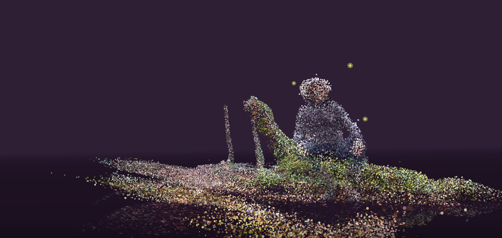

Description: RO.ME is an interactive music video that utilizes three distinct media, switching between video, 2D, and 3D styles. This project was released in 2011 by The Google Creative Lab. This project was very impactful to the web experience, as previously, many websites were using Flash or different plug-ins. Its use of WebGL and HTML allowed users to interact in real time and directly in the browser, which changed the game for the future of modern browser experience.
Technology: WebGL, JavaScript, HTML5, CSS3, Three.js
Comparison: I compared RO.ME with Le Voyage Azarien. RO.ME (2011) created an innovative WebGL interactive video, which demonstrated the cinematic way storytelling can run directly in the browser. This project is more focused on storytelling, musical application, and artist visuals. On the other hand, Le Voyage (2023) uses modern WebGL, which modern technology allows this website to feel more like a real-time interactive journey than a guided music video.
Significance (AI): (via ChatGPT 5) RO.ME was a milestone because it proved that advanced 3D, music, and storytelling could run directly in the browser without plugins. It popularized WebGL at a time when most web graphics relied on Flash, showing the potential of open web technologies for cinematic and interactive experiences.